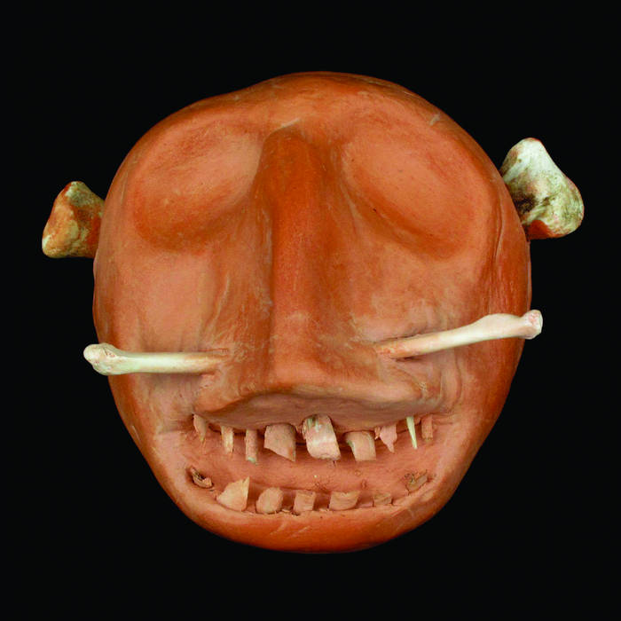

Dansktoppen Møder Burkina Faso I Det Himmelblå Rum Hvor Solen Bor, Suite · 2010
A suite of compositions published on the album "Dansktoppen møder Burkina Faso i det himmelblå rum hvor solen bor, suite” released as a vinyl album and digital by Lolita Industri, Exotic Pylon and yoyooyoy in 2010. The music has been performed at Roskilde Festival, Copenhagen Jazz Festival, By:Larm, on tour in Japan, UK, Germany and many other places.
On the album Dansktoppen møder Burkina Faso i det himmelblå rum hvor solen bor, suite from 2010 the musical universe of Frisk Frugt is added more exotic elements in form of west African inspired songs, drums, and ritual dance. The different tracks on the album still exude of Danish summer and melodic spontaneity, and in combination it appears as a musical journey of discovery, that turns up the mood and unites genres and continents in a space, where chaos and pop songs go hand in hand, and where a burning sun imperceptibly dissolve into domestic skies.
Reviews (in Danish)